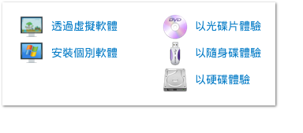

<h1 class="title">ezgo 各種體驗方式</h1>

<div class="main">
    <div class="content">
	<ul>
	    <li> 在 Windows 下您可以使用虛擬軟體來體驗 ezgo 整個系統，或者是安裝個別應用軟體體驗 ezgo。</li>	    
	    <li> 另外，您還可以透過光碟片、隨身碟以 Live 的方式來暫時體驗，當然如果可以的話，我們建議您可以直接將 ezgo 安裝到硬碟之中，以享受更好的效能及更完整的自由軟體體驗。</li>	    
	</ul>
    </div>
</div>

		

